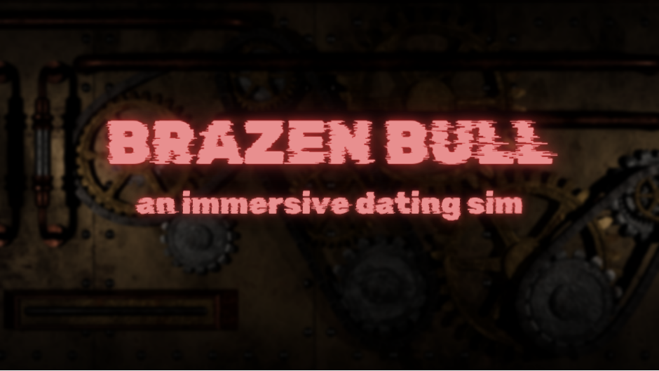
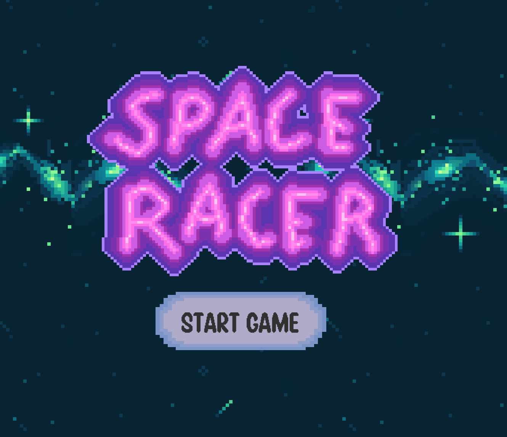
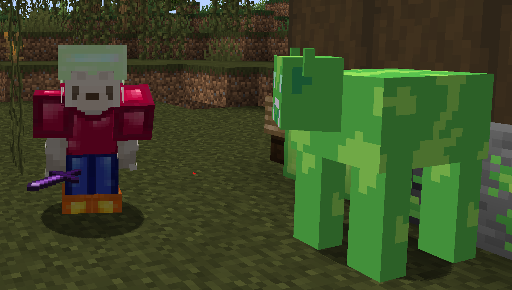

Jump to a category!
Game Development
Back to top
YGGDROWSIL
Tech Used: Unity 3D, C#, Git, Github Projects
Made for the Ubisoft GameLabs Competition
Over 10 weeks, my team and I made a game prototype which included synchronous online multiplayer, artificial intelligence, and 10 minutes of gameplay. My contributions as a programmer included setting up the audio system, creating enemy attacks, making the interactable object system, the settings/menu screens, adding special abilities for the players, and using NetCode to sync the level and ability selection between the two players.

Check the full project out here!
BRAZEN BULL
Tech Used: Unity 3D, C#, Git, Github Projects
Made for the 2024 McGill Game Jam
In 46 hours my team and I managed an agile development process to create a labrynth/puzzle game experience. My contributions included designing and implementing the UI, creating prefabs to efficiently manage the puzzle-triggered actions in game, and making an effective audio system.
Awards: Best Art
Check the full project out here!
SPACE RACER
Tech Used: Unity 3D, C#, Git, Aseprite
My first Unity project! Taught myself C# and the Unity engine in general. This was a solo project where I created a 2D platformer, and designed every aspect of the game such as UI, art, level design, player controls, etc.
Source Code + Download
CRYSTALCRAFT
Tech Used: Java, Git, Gradle, Mojang API
Minecraft Mod
Created a fully automated pipeline to create 200+ scripts that added new features to the game Minecraft. Received 200+ downloads.
Check the full project out here!
Source Code
Graphics
Back to top
FLUID SIMULATOR
Tech Used: Java, Processing, Git
A 2-Dimensional fluid simulation based on Mike Ash's paper, and the Navier-Stokes equations for fluid dynamics. You can click and drag your mouse around to add dye to the simulated fluid environment, and since the base fluid and dye have different densities we can observe diffusion, advection, and projection.
Check out the full project here!
FRACTAL GENERATORS
Tech Used: Java, Processing, Git
I created two fractal generators, one for the Julia Set and one for the Mandelbrot Set. The Julia set takes 2 float arguments between -1 and 1, the first argument being the real component of the input and the second number being the imaginary compnent. As for the Mandelbrot set, we can alter 4 inputs to change the region of the complex plane we use for the calculations of the fractal. It's really interesting, because the Julia set is essentially just a zoomed in version of Mandelbrot, i.e. the Mandelbrot is essentailly a map of all possible Julia sets on the complex plane! To make the generated fractals more visually interesting I also created a color mapping function to better understand the number convergence and divergence in these sets.
Julia Set with the equation -0.8 + 0.156i
Mandelbrot Set with the coordinates -1.019741354, -1.013877846, -0.325120847, -0.322189093
Julia Set Source Code
Mandelbrot Set Source Code
Other Projects
Back to top
PERSONAL WEBSITE
Tech Used: HTML, CSS, JavaScript
The wesbite you're on right now! Created while working through Codecademy's Full Stack Engineer course . Made to help me get comfortable creating websites, and with using front end and back end skills for real projects.